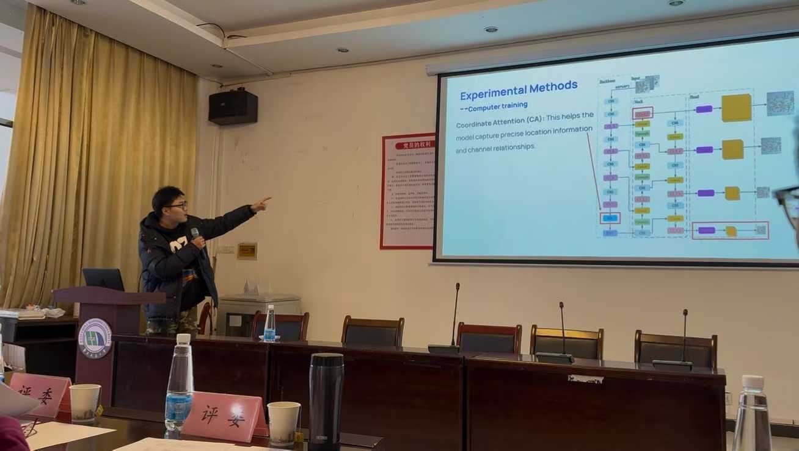
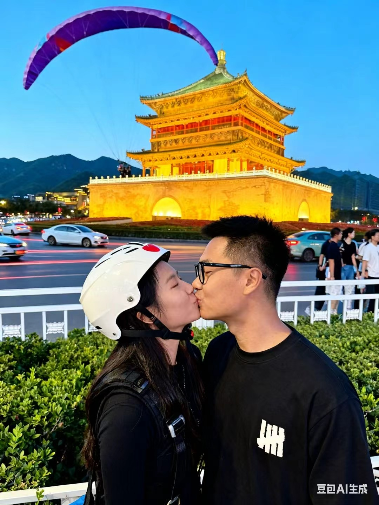
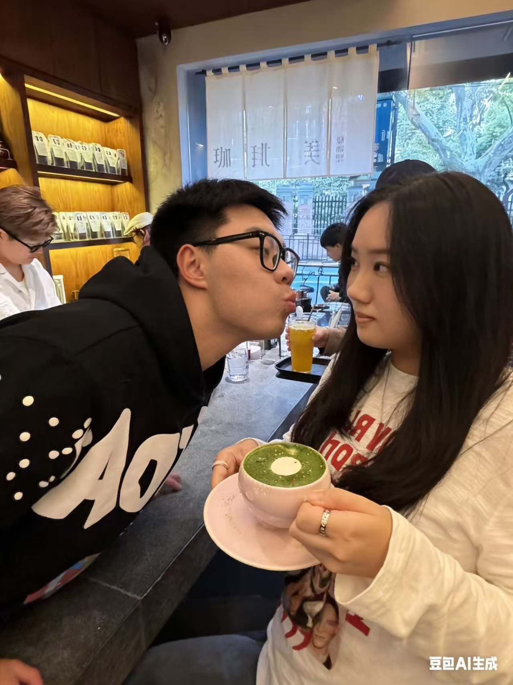

这一年，不只是前进…
我把“能做”变成“做好”，把“想法”变成“交付”。在工程逻辑与生活节奏之间，找到属于自己的稳态。
PERSONAL REVIEW / 2025
我把“能做”变成“做好”，把“想法”变成“交付”。在工程逻辑与生活节奏之间，找到属于自己的稳态。
🧩 专硕第一年
方向、节奏、方法都从试探走向系统化。📈 数据成果
仿真 + 实验形成闭环，关键结论有据可依。ACTIVE NODE
1月 · 确定研究方向
明确算法到硬件协同优化主线。
完成方向梳理与第一轮实验路线规划。
🏆 年度高光荣誉
1等奖研究生英语学术交流决赛📊 EE硕士进程
Top 10%核心课程 GPA 稳步提升🧪 学术成果预览
1 篇核心摘要聚焦 LLM 与 AI 芯片融合🌍 远方行囊
1 个签证下一站：更大的工业舞台

